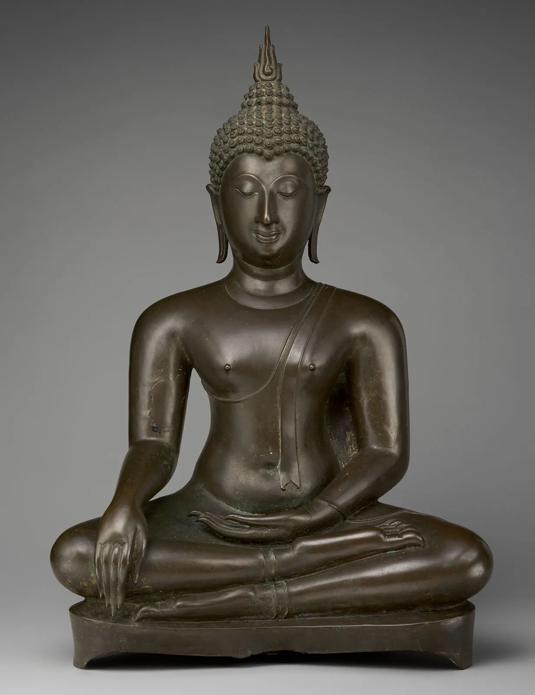

ტიბეტი
ტიბეტში ბუდისტებს უცნაური რიტუალი აქვთ. ბუდისტებს ხელახალი დაბადების წრისა სჯერათ, რაც იმას ნიშნავს, რომ არ არის აუცილებელი სხეულის დაკრძალვა სიკვდილის მერე, რადგან სული უკვე გადავიდა სხვა სხეულში. სხეულისგან რომ რაც შეიძლება სწრაფად გათავისუფლდნენ, სპეციალისტები გვამს ჭრიან და მტაცებელ ფრინველებს უმზადებენ, რომლებსაც მოწყალებასავით გადასცემენ გარდაცვლილთა სხეულის ნაწილებს.